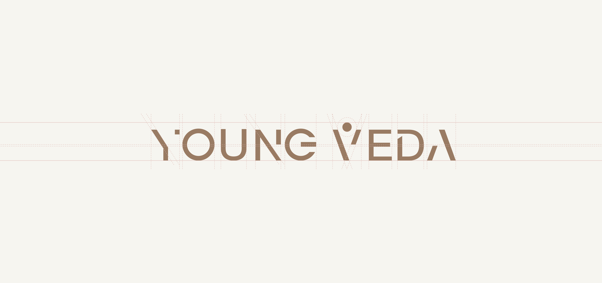
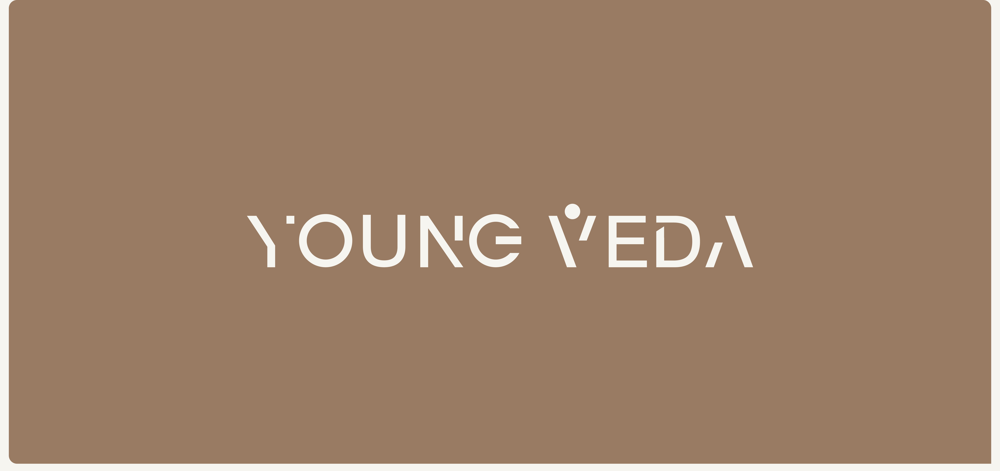
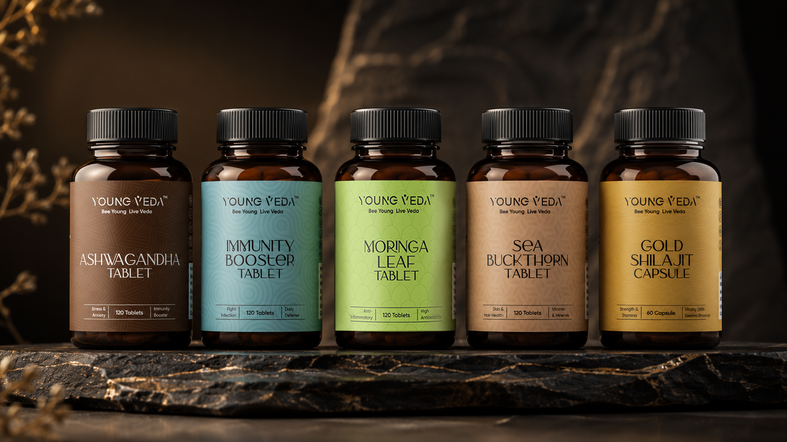
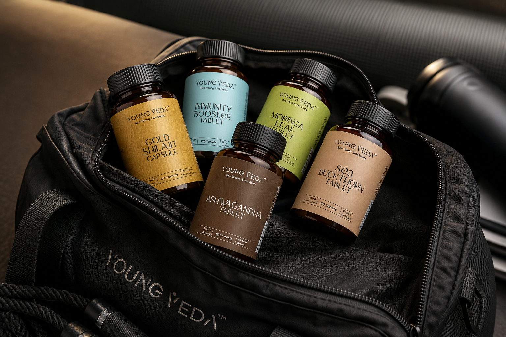

Plant-based, Ayurvedic supplements built on a simple idea: natural ingredients with scientific precision — helping people live young, the Vedic way.

Young Veda draws its philosophy from traditional Vedic wellness practices, reframed for a modern audience. Rather than positioning itself as another supplement brand, Young Veda set out to be a contemporary bridge between ancient wisdom and scientific rigour — supplements that restore balance, not just fill a gap.
Our brief was to build a complete identity system that could carry that positioning across every touchpoint: the logo, the packaging line, brand applications and the storefront — all needing to feel premium, trustworthy and unmistakably Young Veda at a glance.
The wordmark was built to hold two ideas in tension at once — youthful vitality and timeless Ayurvedic wisdom. A custom-cut typeface gives the mark a confident, contemporary edge, while a human-inspired "V" — arms raised, a single dot above like a rising sun — becomes a quiet symbol of energy and wellbeing at the centre of the name.


Across the range — Ashwagandha, Immunity Booster, Moringa Leaf, Sea Buckthorn, Gold Shilajit Capsule and Pure Shilajit — the system relies on a consistent structure, elegant typography, subtle patterns and colour-coding to tell each product apart at a glance without ever losing the family resemblance. Amber glass bottles with black caps ground the range in credibility, while the label system keeps it feeling contemporary rather than clinical.



The identity was extended across real-world touchpoints — tote bags, gym bags, embossed signage and storefront branding — so the brand feels just as considered off the shelf as it does on it.



The identity carries through to the Young Veda website — a clean, product-first storefront built to convert, with the same typography, colour language and photography style established across the packaging system.

Whether you're launching something new or redefining an existing business, we'd love to hear your story.
Start Your Project →